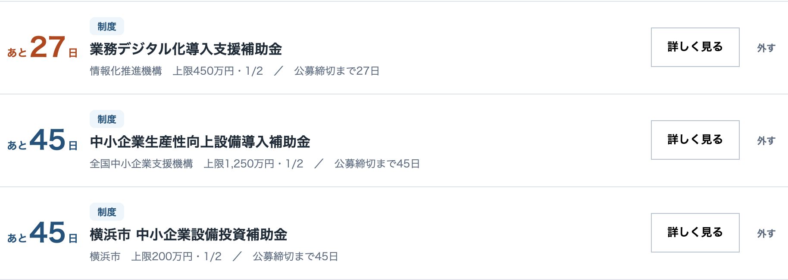

SUBSIDY ／ FINANCE ／ AI初期登録費用10万円＋月額3万円（税別）
使える制度を見逃さない。
見つけたら、すぐ書ける。
所在地・業種・従業員数など8項目を入れると、使えそうな制度の候補と締切、対象経費が出ます。あとはAIの質問に答えるだけで、事業計画書の土台ができます。その後も、御社に合う制度が毎週金曜の朝に届く仕組みです。
成功報酬はありません。AIツール「Claude Code」（米Anthropic社）の利用料は、別途ご契約ください。
- 料金
- 初期登録費用100,000円＋月額30,000円いずれも税別。成功報酬はありません
- 届く
- 自社に合いそうな制度情報毎週金曜の朝。国・都道府県・市区町村
- 学べる
- 採択事例と、専門家の解説採択された計画書・見本・解説動画
- つくれる
- AIエージェントとの対話Claude Codeをベースに、質問に答えて土台を作ります
- 残る
- 翌年度の制度と、融資の資料へ会社カルテに貯まり、作り直さずに使い回せます
- 相談
- 人の支援専門家相談（初回30分無料）・AI家庭教師
- しない
- 申請の代行はしません採択・融資の承認・受給額を保証するものではありません
01J-SYSTEM AI EDITION
8項目を入れると、
候補が5〜6件。
従来の補助金診断システム「Jシステム」のAI版です。Claude Code上で動く専用スキルに御社の情報を入力すると、合いそうな制度を抽出します。
入力は8項目。埋まっている分だけで候補を出します。
抽出された候補5件／右端は想定採択可能性（参考情報）
小規模事業者持続化補助金補助金標準的
販路開拓・生産性向上の取り組みに使える制度。設備、広報、ウェブサイト関連費などが対象になり得ます。
締切：公募回ごと 対象経費：機械装置・広報・ウェブ 次の確認：商工会議所の確認書
IT導入補助金補助金標準的
業務システムやツールの導入に使える制度。登録されたIT導入支援事業者と組んで申請します。
締切：締切回ごと 対象経費：ソフトウェア・導入費 次の確認：支援事業者の選定
ものづくり補助金補助金やや低い
革新的な製品・サービス開発や生産プロセス改善のための設備投資。要件が重く、事業計画の作り込みが必要です。
締切：公募回ごと 対象経費：機械装置・システム構築 次の確認：賃上げ要件の充足
都道府県・市区町村の設備投資助成補助金標準的
所在地の自治体が独自に設けている助成。国の制度と併用できない場合があります。
締切：自治体ごと 対象経費：設備・改修 次の確認：国制度との併用可否
設備資金の低利融資／信用保証付き融資融資要追加確認
補助金は多くの制度で精算払いです。先に支払う分の資金手当てとして、融資制度もあわせて候補に出します。
締切：随時 対象：設備資金・運転資金 次の確認：直近2期の決算内容
想定採択可能性は、入力情報と確認できる制度情報をもとにAIが示す参考情報です。申請資格、採択、融資承認、受給額を保証するものではありません。最終的な判断は、制度事務局または金融機関によるものです。
掲載している画面は、現在のデザインに合わせて作成した画面イメージです。制度名は例として挙げているもので、御社が対象になるかどうかは公募要領と事務局の判断によります。
02WHY CONTINUOUS
一度調べて
終わりでは、
間に合わない。
制度は年間を通じて新設・更新されます。国・都道府県・市区町村で、募集の時期もまちまちです。
見つけてから事業計画を考えると、締切に届きません。
年間を通じて多数の制度や募集情報が発表されます。そのすべてを片手間で追い続けるのは難しく、公募期間が数週間という制度もあるほどです。気づいたときには受付が終わっている、ということが起こります。
制度は毎年、入れ替わるものです。名前も要件も変わり、去年使えたものが今年は消えていることもあります。だから必要なのは、継続的な情報収集と、事業計画の事前準備の2つです。
FIG.1同じ3つの制度を、いつ知るか
WITHOUT ／ 必要になってから調べる
縦線が、調べ始めた日。上の2つは、その時点で受付が終わっています。
WITH ／ 毎週届く
発表された週に届くので、3つとも準備期間が残ります。
帯の長さは公募期間のイメージで、特定の制度の日数を示すものではありません。灰色は、気づいたときには締切が過ぎている制度です。

毎週金曜の朝に届くお知らせ（画面イメージ）

気になる制度は「検討中」へ。締切の近い順に「あと何日」が出ます。画面内の制度名・金額は架空の表示例です。横にスクロールしてご覧ください。
公的統計と調査で確認できる、「届かない」「書けない」、そして出しても半分以上は通らないという現状です。
補助金の活用に関心がありながら、申請手続きに至っていない経営層の割合。
民間調査／btobee（2026年6月実施、中小企業の経営者・役員300人。事前調査3,000人からの抽出）
申請に進めない理由の最多は「自社に最適な補助金が分からない」。
民間調査／btobee（同上）
経営計画を策定していると回答した小規模事業者の割合。
中小企業庁「2026年版 小規模企業白書」第2-1-53図
小規模事業者持続化補助金 第19回の採択率。16,576件の申請に対し、採択は7,819件。
中小企業庁 2026年7月29日発表
見つからない。書けない。
詰まるところは、この2つです。使える制度があることを知らないまま締切が過ぎている。運よく見つけても、今度は白紙の「事業計画」という欄を、埋められない。月額30,000円は、この2つを同時に外すためのものです。
03VALUE
月額30,000円に、
この3つが含まれます。
制度を見つける、事例と解説で学ぶ、AIとの対話でつくる。この3つが1つの契約に入っています。
毎週金曜の朝、合う制度が届く
必要になってから探すのではなく、使える可能性がある段階で把握できます。
- 補助金・融資・税制優遇
- 国だけでなく、都道府県・市区町村も対象
- 制度名・概要・締切・対象経費が分かる
- 気になる制度は「検討中」で締切を管理
採択された計画書と解説動画で学べる
白紙から考えずに済みます。顧問の先生へ渡す整理資料にもなります。
- 採択された事業計画書の事例
- 参考になる申請書・事業計画書の見本
- 制度の背景と審査の考え方を説明した動画
- 専門家による書き方の解説資料
AIとの対話で、土台を作れる
白紙は渡しません。答えられる問いだけが、順番に出てきます。
- 補助金の事業計画書の土台
- 融資相談で使う事業計画の土台
- 強み・顧客ニーズ・市場環境の整理
- 実施計画と、投資効果の計算
採択された計画書の一覧（画面イメージ）

画面内の会社名・制度名・金額・採択年は架空の表示例です。掲載する事例は、一般公開・掲載許諾済み・匿名加工済みの資料に限ります。横にスクロールしてご覧ください。
導入について相談する成功報酬なし・月額30,000円（税別）
04AI AGENTS
白紙は埋まらない。
問いなら、
答えられる。
「強みを書いてください」で手が止まる欄も、「その1社が他社ではなく御社を選んだ決め手は」と聞かれれば答えられます。
AIの質問に1つ答えるたびに、事業計画書の欄が1つ埋まります。
最近受注した顧客は、どのような会社ですか
→ 顧客・ニーズの整理へ顧客が他社ではなく自社を選んだ理由は何ですか
→ 自社の強みの整理へ今回、何を導入・購入・開発しますか
→ 取組内容へ誰が、いつまでに実行しますか
→ 実施計画とスケジュールへ必要な経費はいくらですか
→ 経費明細へ投資によって、売上や利益はどう増えますか
→ 投資効果へその効果を、どのような計算式で説明できますか
→ 効果の根拠へ既存事業との違いは何ですか
→ 事業の新規性へ市場や顧客に、どのような変化が起きていますか
→ 市場環境の整理へ
公募要領と、会社の事実
出したい制度が決まっていれば公募要領を登録。決まっていなければAIが最新の公募情報を検索します。
AIからの問いに答える
白紙の欄ではなく、答えられる問いが順番に出ます。足りない答えは聞き直されます。
事業計画書と融資資料の土台
答えた分だけ埋まり、どこが空いているかが常に見えます。
エージェントの中身（スキル）は毎月更新され、制度の改定や書き方の変化に追随します。御社が用意するのは、公募要領と、聞かれたことへの答えだけです。

AIからの質問と、答えから下書きされた計画書（画面イメージ）。Claude Codeをベースに動き、使ったことがない前提で設計しています。
05REUSE
通らなくても、
書いたものは
残ります。
聞かれることは、制度が変わっても大きくは変わりません。だから成果物も、作る力も残る仕組みです。
一度書いた計画は、翌年度の制度にも融資の相談にも使い回せます。

書いた内容が貯まる「会社カルテ」（画面イメージ）。横にスクロールしてご覧ください。
INPUTAIとの対話で書いた、自社の計画
- 今年の補助金の事業計画書
- 翌年度の、別の制度
- 設備投資の融資相談・金融機関に出す資料
- 新規事業計画／社内の経営計画
制度ごとの様式と、審査項目に合わせた書き足しは、そのたびに必要になります。
作り直しにはならないので、今年の応募に通らなくても、書いたものは残ります。
結果がどうであっても、会社に残る4つの力。
審査するのは制度の実施機関と金融機関であり、私たちではありません。それでも会社に残るものが、次の4つです。
- 自社で事業計画を作る力何を聞かれ、どう答えれば伝わるのかが分かります。
- 自社の強みを言語化する力「選ばれた理由」を、事実として説明できるようになる。
- 売上効果を数字で説明する力投資と効果を、計算式で示せるようになります。
- Claude Codeなどを実務で使うAI活用スキル補助金の申請に限らず、日々の業務に持ち込める使い方が身につきます。
06SUPPORT
迷ったときは、
人に相談できます。
主役はAIですが、進めるうちにぶつかる壁が3つあります。それぞれに用意したのが、人の支援です。
壁 1この方向で合っている？
専門家に相談
補助金・税務・採用などの専門家に相談できます。初回30分無料です。
壁 2採択されても、先に払うお金が要る
資金調達の相談窓口
補助金の多くは後払いです。銀行・事業ローン・ファクタリングの相談先をご案内します。
壁 3AIの使い方が分からない
AI家庭教師
月2時間まで追加料金なし。超えた分は1時間1万円（税別）です。
資金調達の相談先の審査や条件を、当社が保証するものではありません。
07PRICE
初期登録費用
10万円＋月額3万円。
成功報酬なし。
自社で進めるなら、この1本です。採択されても、受給額が大きくても、当社へのお支払いは増えません。（AI家庭教師の月2時間を超えた分と、Claude Code の利用料は別です）
Jマッチエンジン AI自走プラン
30,000円／月（税別）
初期登録費用 100,000円（税別）・成功報酬なし制度を見つけ、事例と解説で学び、AIとの対話で事業計画の土台を作るところまでが含まれます。
- 自社に合いそうな制度情報の配信（毎週金曜／補助金・融資・税制優遇）
- 「検討中」での締切の管理
- Jシステム AIエディションによる候補の抽出
- 申請締切や対象経費の確認
- 想定採択可能性の参考表示
- 過去の採択事例・事業計画書の見本
- 専門家による解説動画・資料
- Claude CodeをベースにしたAIエージェント
- 事業計画書・融資資料の土台作成と会社カルテ
- 専門家相談（初回30分無料）
- AI家庭教師（月2時間まで）
- 資金調達の相談窓口・お問い合わせ窓口
月額に含まれないもの：Claude Code の利用料（Claude Code は米Anthropic社のAIツールです。御社が提供元と直接ご契約ください）。また、申請の代行・提出書類の作成は行いません。
向いている会社
- 自社で事業計画を作る力を、会社に残したい
- 設備投資・採用・新規事業など、制度を使いたい予定がある
- 1回で終わらせず、出てくる制度に何度も手を挙げたい
向いていない会社
- 申請書類の作成まで、丸ごと任せたい（当社は申請代行をしません）
- 今回の1件だけ申請できれば、それでよい
導入事例へのご協力で、初期登録費用10万円が0円になる枠があります
通常の初期登録費用は100,000円（税別）です。値引きではなく、事例づくりへのご協力との交換です。受付枠と期限は、個別のご相談の際にご案内します。
- 01利用後の感想使ってみてどうだったかを、率直にお聞かせください。
- 02簡単なインタビューお時間は短くて構いません。
- 03利用状況と改善要望どこで詰まったかが、いちばん役に立ちます。
- 04導入事例としての掲載掲載内容は、公開前に必ず御社にご確認いただきます。
0円になるのは初期登録費用のみで、月額30,000円は契約開始後に発生します。料金はすべて税別です。会社名や担当者名、写真の公開範囲は個別の確認事項です。
FIG.2どこまでを、誰が持つか
制度の情報／答えられる問い／事業計画の土台
制度への提出書類の作成と提出
この線は、報酬を得て提出書類を作成することが有資格者の業務と定められていることによります。株式会社ライトアップが資格業務を行うことはありません。
金額はすべて税別です。最低利用期間、解約の条件、返金の取り扱い、お預かりする情報の範囲と保存・削除・外部送信の有無は、ご契約前に書面でご提示します。
08FLOW
お申し込みから、
計画書づくりまで。
最初の2つが初期登録の範囲です。3つめから、配信とAIツールをお使いいただけます。
01〜02 初期登録費用の範囲03〜06 月額30,000円の範囲
- お申し込み・ヒアリングいま検討している投資、採用や賃上げの予定、これから始めたい事業を伺います。
- 会社情報の初期登録所在地、業種、従業員数、売上規模などを登録します。
- Jシステム AIエディションで制度を確認合いそうな制度の候補と、締切、対象経費を確認。以後、毎週金曜に配信が届きます。
- 採択事例・解説動画・AIエージェントの利用開始事例と解説で考え方をつかみ、AIとの対話を始めます。
- 制度が見つかったら事業計画を作成質問に答えて土台を作り、公募要領の様式に合わせて仕上げていきます。
- 迷ったら、人に相談方向性は専門家（初回30分無料）へ、AIの使い方はAI家庭教師へ。提出書類の作成が必要なら、御社が依頼する有資格者の方へ。
09FAQ
申し込む前の、
確認事項。
月額30,000円には何が含まれますか。
制度情報の配信（毎週金曜）と「検討中」、Jシステム AIエディションによる候補の抽出、締切と対象経費の確認、想定採択可能性の参考表示、過去の採択事例と事業計画書の見本、専門家による解説動画・資料、AIエージェントによる事業計画書と融資資料の土台作成、会社カルテ、専門家相談（初回30分無料）、AI家庭教師（月2時間まで）、資金調達の相談窓口です。別途、初期登録費用100,000円（税別）がかかります。
Claude Code の利用料は、月額に含まれますか。
含まれません。Claude Code は米Anthropic社のAIツールで、AIエージェントはこの上で動きます。利用料は御社で提供元と直接ご契約ください。初期設定は導入時にご案内します。
AIが申請書を完成させてくれますか。
いいえ。AIが作るのは事業計画の土台です。制度ごとの提出様式を埋めて仕上げるのは、御社ご自身か、有資格者の先生になります。申請の代行も行いません。
採択や融資の承認は保証されますか。
いいえ。補助金は制度の実施機関が、融資は金融機関が判断します。採択率・受給額・承認をお約束することはありません。
想定採択可能性とは何ですか。
入力情報と確認できる制度情報をもとに、AIが示す参考情報です。申請資格、採択、融資承認、受給額を保証するものではなく、最終的な判断は制度事務局または金融機関によるものです。精密な数値ではなく、段階での表示にしています。
どのような採択事例を閲覧できますか。
一般公開されている資料、掲載許諾を得ている資料、企業を特定できないよう適切に匿名加工した資料に限ってご覧いただけます。企業秘密や個人情報、掲載許諾が確認できない資料は掲載しません。
Claude Code を使ったことがなくても利用できますか。
使ったことがない前提で設計しています。AIから順番に質問が出るので、事実を思い出して答えていただく形です。初期設定と使い方は導入時にご案内し、分からないときはAI家庭教師（月2時間まで追加料金なし）に聞けます。
自社でどこまで作業する必要がありますか。
質問への回答は御社にお願いします。会社の事実を知っているのは御社だけだからです。白紙から文章を書く作業は不要ですが、手を動かしていただく必要はあります。
顧問の税理士や行政書士へ資料を渡せますか。
はい。専門家へ依頼するための整理資料として出せます。すでに顧問の先生がいらっしゃる場合は、その先生に渡す資料をつくる使い方もできます。
作った事業計画を融資にも使えますか。
はい。補助金で聞かれることと、金融機関で聞かれることは多くが重なります。同じ土台から、融資相談で使う資料を組み立てられます。
初期登録費用が0円になる条件は何ですか。
導入事例へのご協力が条件です。利用後の感想、簡単なインタビュー、利用状況や改善要望のヒアリング、掲載内容を事前確認いただいたうえでの導入事例掲載にご協力いただきます。0円になるのは初期登録費用のみで、月額30,000円（税別）は契約開始後に発生します。受付枠と期限は、個別のご相談の際にお伝えする形です。
最低利用期間、解約、返金、お預かりする情報の取り扱いは、どこで確認できますか。
いずれもご契約前に、書面と利用規約・プライバシーポリシーでご提示します。お申し込みの前に、必ずご確認いただけます。
10NEXT
使える制度を見逃さず、
見つけたら、すぐ書ける会社へ。
初期登録費用100,000円＋月額30,000円（税別）で、制度を見つけ、事例で学び、AIとの対話で事業計画の土台を作るところまで始められます。導入事例にご協力いただける会社は、初期登録費用が0円。まずはご相談ください。
導入について相談する成功報酬なし・受付枠と期限は個別にご案内します